See how the delimiters are of reasonable size in these examples
even when there is no matching delimiter
Differentials often need a bit of help with their spacing as in
whereas vector problems often lead to statements such as
Occasionally one gets horrible line breaks when using a list in mathematics such as listing the first twelve primes 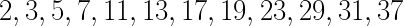 . In such cases, perhaps include \mathcode‘\,="213B inside the inline maths environment so that the list breaks: 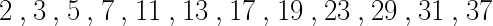 . Be discerning about when to do this as the spacing is different.
Arrays of mathematics are typeset using one of the matrix environments as in
Case statements use cases:
Many arrays have lots of dots all over the place as in
In the flow of a fluid film we may report
Alternatively, the curl of a vector field (u,v,w) may be written with only one equation number: Whereas a derivation may look like
Observe that trigonometric and other elementary functions are typeset properly, even to the extent of providing a thin space if followed by a single letter argument:
With sub- and super-scripts placed properly on more complicated functions,
and large operators, such as integrals and

Mathematical accents are performed by a short command with one argument, such as
or
The Airy function, Ai(x), may be incorrectly defined as this integral
This vector identity serves nicely to illustrate two of the new commands:
Definition 1 (right-angled triangles) A right-angled triangle is a triangle whose sides of length 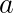, and , in some permutation of order, satisfies 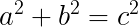.
Lemma 2 The triangle with sides of length , 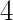 and 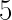 is right-angled.
This lemma follows from the Definition 1 as 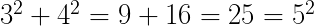.
Theorem 3 (Pythagorean triplets) Triangles with sides of length 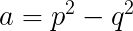, 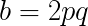 and 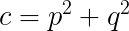 are right-angled triangles.
Prove this Theorem 3 by the algebra 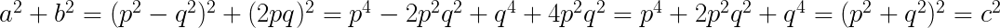.